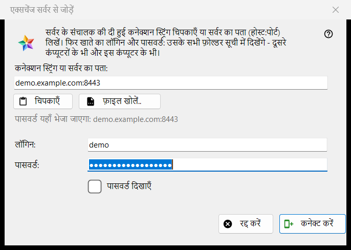
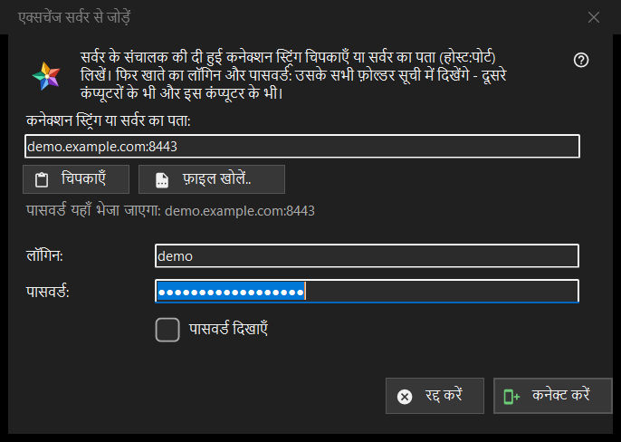

एक्सचेंज सर्वर से जोड़ें
यह किस लिए है
इस कंप्यूटर को एक्सचेंज सर्वर के एक खाते से जोड़ता है, ताकि उस खाते के सभी डिवाइस के फ़ोल्डर संसाधन सूची में दिखें। यह संसाधन सूची के मेरे डिवाइस अनुभाग में एक्सचेंज सर्वर से जोड़ें.. बटन से खुलता है, और तब भी जब आप कनेक्शन स्ट्रिंग या फ़ाइल को व्यूअर पर छोड़ते हैं या फ़ोल्डर बॉक्स में टाइप करते हैं।


इस क्रम में
- सर्वर के संचालक से मिली कनेक्शन स्ट्रिंग चिपकाएँ, पता host:port के रूप में टाइप करें, या फ़ाइल खोलें.. दबाएँ।
- पंक्ति (पासवर्ड यहाँ भेजा जाएगा: ..) जाँचें: वही पता एकमात्र जगह है जहाँ पासवर्ड जाता है।
- लॉगिन और पासवर्ड दर्ज करें।
- कनेक्ट करें दबाएँ।
- यदि प्रोग्राम सर्वर के प्रमाणपत्र के बारे में पूछे, तो फ़िंगरप्रिंट की तुलना उससे करें जो संचालक ने बताया था।
तत्व
कनेक्शन स्ट्रिंग या पता
पहला बॉक्स कनेक्शन स्ट्रिंग (जो FMSEXCH1: से शुरू होती है) या host:port के रूप में पता लेता है। चिपकाएँ उसे क्लिपबोर्ड से भरता है, टेक्स्ट से या QR कोड की तस्वीर से, और फ़ाइल खोलें.. .fmsexch फ़ाइल या QR तस्वीर पढ़ता है। चिपकाने से केवल फ़ॉर्म भरता है: कनेक्ट करें दबाने तक कुछ नहीं भेजा जाता। बॉक्स के नीचे की पंक्ति दिखाती है कि पासवर्ड कहाँ जाएगा; वेब पता, फ़ोल्डर कोड या क्षतिग्रस्त स्ट्रिंग वहीं सरल शब्दों में अस्वीकार कर दी जाती है।
लॉगिन और पासवर्ड
लॉगिन स्ट्रिंग से भर जाता है जब उसमें एक हो। पासवर्ड छिपा रहता है; पासवर्ड दिखाएँ उसे दिखा देता है। कनेक्ट करें दबाने पर पासवर्ड बॉक्स खाली कर दिए जाते हैं, इससे पहले कि पहला बाइट कंप्यूटर से निकले। स्थिति पंक्ति प्रगति दिखाती है और विफल होने पर कारण: लॉगिन या पासवर्ड जो मेल नहीं खाया, बहुत ज़्यादा प्रयास, या सर्वर जो जवाब नहीं देता।
आमंत्रण स्ट्रिंग
जो स्ट्रिंग आमंत्रण होती है, वह पहले से सर्वर का नाम बताती है और विंडो को खाता बनाने की स्थिति में बदल देती है: पासवर्ड एक बार और फ़ील्ड और पासवर्ड नियम का नोट दिखता है (कम से कम 10 वर्ण, एक बड़ा और एक छोटा लैटिन अक्षर और एक अंक), और बटन का नाम खाता बनाएँ हो जाता है। नियम पर अंतिम निर्णय सर्वर का है।
सर्वर का प्रमाणपत्र
यदि प्रमाणपत्र अज्ञात है, तो एक सवाल उसका फ़िंगरप्रिंट दिखाता है और पूछता है कि सर्वर पर भरोसा करके उसे याद रखना है या नहीं; डिफ़ॉल्ट उत्तर नहीं है। यदि स्ट्रिंग कोई फ़िंगरप्रिंट बताती है और सर्वर दूसरा प्रस्तुत करता है, तो दोनों दिखाए जाते हैं, कुछ याद नहीं रखा जाता और कोई पासवर्ड नहीं भेजा जाता।
फिर से साइन-इन
जब विंडो किसी मौजूदा सर्वर प्रविष्टि के लिए फिर से साइन-इन करने को खुलती है, तो वह पता और लॉगिन केवल-पढ़ने के रूप में दिखाती है, और उस प्रविष्टि का याद रखा फ़िंगरप्रिंट ही भरोसे का आधार है।